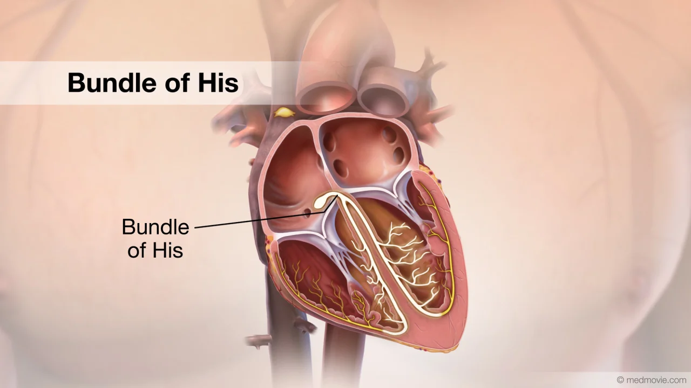

Bundle of His

What is the Bundle of His?
The Bundle of His is a collection of heart muscle cells that play an important role in the electrical conduction system of the heart. It helps carry electrical signals from the AV node to the ventricles, enabling proper heartbeats.
Location of the Bundle of His
The Bundle of His is located in the interventricular septum (the wall between the left and right ventricles). It begins at the AV node and travels down toward the apex (bottom) of the heart.

Functions of the Bundle of His
Signal Transmission:
The Bundle of His receives the electrical impulse from the AV node and transmits it to the ventricles through the right and left bundle branches.
Coordinated Contraction:
It ensures that both ventricles receive the signal at the same time so they can contract together and pump blood efficiently throughout the body.
Importance of Bundle of His
Without the Bundle of His, the electrical signal would not properly reach the ventricles, leading to weak or uncoordinated heartbeats. It is vital for synchronized pumping of blood to the lungs and the rest of the body.
Key Points:
- Connects AV node to the ventricles.
- Splits into right and left bundle branches.
- Ensures proper timing of ventricular contraction.
Any damage to the Bundle of His can lead to heart block or abnormal rhythms, which may require a pacemaker or medical treatment to regulate the heartbeat.